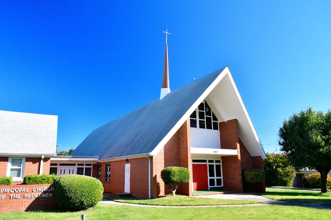

NC A&T
Redeemer’s first worship took place at the A&T campus chapel in June 1909. Current route details need confirmation.
Getting here
Getting here should not be the barrier to belonging.
Use 901 E Friendly Ave., Greensboro, NC 27401. Open Google Maps.
Exact parking lots, Sunday entrances, and overflow guidance need an onsite church review before launch.
Contact the church before your visit for the clearest accessible entrance and drop-off guidance. Site-specific details need church confirmation.
The data structure is ready for future GTA/GTFS route information. No live transit feed is connected, so confirm current schedules with Greensboro Transit.
Use the form below when a bus schedule, mobility need, or other barrier makes arrival difficult.
Routes toward Redeemer
These origin cards are future-ready placeholders. Route numbers, stops, walking times, and leave-by guidance must be confirmed from current transit data.
Redeemer’s first worship took place at the A&T campus chapel in June 1909. Current route details need confirmation.
Student ride support and transit guidance can be requested when Sunday service does not align with the bus schedule.
Future GTFS data can provide stops, direction, walking time, and live schedule links.

Know what to look for
The brick church, steep roof, front cross window, and red doors help identify Redeemer from E Friendly Avenue. Future photography should document parking turns, sidewalks, bus stops, accessible drop-off, and the correct Sunday entrance.
Transportation help